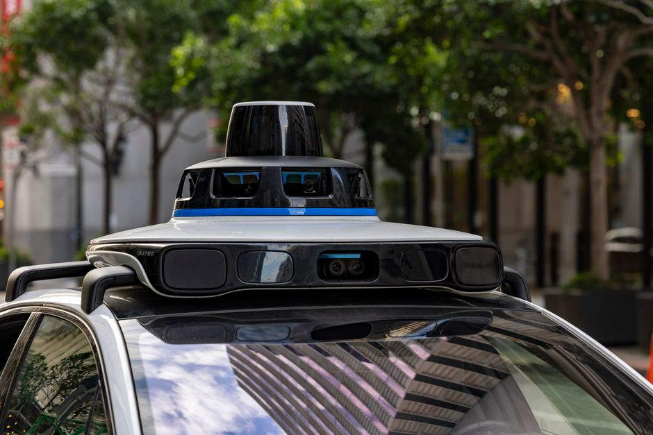

Imagine a future where cars drive themselves, navigating bustling Indian streets, smoothly avoiding obstacles, and safely delivering you to your destination while you relax, read, or even catch up on homework. Sounds like science fiction, right? Well, that future is rapidly becoming a reality, and it's powered by the incredible world of autonomous vehicles and self-driving technology. At MakerWorks, we believe understanding this cutting-edge field isn't just about knowing what's next; it's about empowering you to build it. Let's buckle up and embark on an exciting journey into how cars learn to see, think, and drive all on their own!
What Are Autonomous Vehicles?
At its core, an autonomous vehicle (AV) is a car, truck, or even a robot that can perceive its environment and navigate without human input. Think of it as a super-smart robot on wheels! The Society of Automotive Engineers (SAE) has defined six levels of driving automation, ranging from Level 0 (no automation, a human does everything) to Level 5 (full automation, the vehicle can handle all driving tasks in all conditions without human intervention). Most cars today offer Level 1 or 2 features like cruise control or lane-keeping assist, but the race is on for higher levels of autonomy, promising a future where your car is truly your personal, intelligent chauffeur.
How Do Self-Driving Cars See the World? (The Sensor Suite)
For a car to drive itself, it needs to understand its surroundings even better than a human driver. This is achieved through an array of sophisticated sensors that act as the vehicle's "eyes" and "ears."
LiDAR (Light Detection and Ranging)
LiDAR is like the vehicle's superpower for 3D vision. It works by sending out millions of laser pulses per second. When these pulses hit an object (like another car, a pedestrian, or a tree), they bounce back to the sensor. By precisely measuring the time it takes for the light to return, the LiDAR system creates a highly accurate, detailed 3D 'point cloud' map of the surroundings. This map helps the car understand shapes, distances, and even the speed of objects around it, day or night, making it excellent for obstacle detection and mapping.
RADAR (Radio Detection and Ranging)
Radar, or Radio Detection and Ranging, uses radio waves instead of light. These waves can travel further and are less affected by adverse weather conditions like heavy rain, fog, or snow, which can challenge LiDAR and cameras. Radar is excellent for detecting the presence, speed, and range of objects, making it crucial for adaptive cruise control and emergency braking systems. While it doesn't provide the detailed 3D maps of LiDAR, its reliability in tough conditions makes it an indispensable component for long-range detection.
Cameras
Just like our eyes, cameras are vital for self-driving cars. They capture visual information, allowing the car to 'see' traffic lights, road signs, lane markings, pedestrians, and other vehicles. Advanced computer vision algorithms process these images to identify objects, classify them (e.g., 'this is a bicycle,' 'this is a stop sign'), and understand their context. Stereo cameras, which mimic human binocular vision, can even help estimate depth and distance, providing crucial visual awareness.
Ultrasonic Sensors
These are the 'parking sensors' you might be familiar with. Ultrasonic sensors emit high-frequency sound waves and measure the time it takes for the echo to return. They are perfect for short-range detection, typically used for parking assistance, blind-spot monitoring, and detecting objects very close to the vehicle, such as curbs or walls, preventing low-speed collisions.
GPS and IMU (Inertial Measurement Unit)
Global Positioning System (GPS) provides the car's location on a global map, telling it where it is in the world. However, GPS alone isn't precise enough for self-driving, especially in urban canyons or tunnels. That's where the Inertial Measurement Unit (IMU) comes in. An IMU contains accelerometers and gyroscopes that track the car's orientation, speed, and direction changes very precisely, even when GPS signals are weak or unavailable. Together, they offer a robust understanding of the vehicle's precise position and movement.
The Brain Behind the Wheel: Sensor Fusion and AI
Having all these sensors is great, but they need a "brain" to make sense of the flood of information. This is where sensor fusion and artificial intelligence (AI) come into play.
Sensor Fusion: Combining Perspectives
Imagine trying to cross a busy road with only one eye open, or only being able to hear. You'd miss a lot of crucial information! Self-driving cars face a similar challenge. Each sensor has its strengths and weaknesses. LiDAR gives precise depth but can struggle with color. Cameras see color and text but can be fooled by lighting. Radar works in bad weather but has lower resolution. This is where **sensor fusion** becomes critical. It's the process of combining data from all these different sensors into a single, comprehensive, and reliable understanding of the environment. By fusing the data, the car creates a more robust and accurate 'picture' of the world, reducing the chances of errors that a single sensor might make.
"The greatest advances in science and engineering have almost always come from a combination of different fields." - Rodney Brooks, Roboticist
This quote perfectly describes the interdisciplinary nature of autonomous vehicles, where mechanics, electronics, computer science, and artificial intelligence converge.
AI and Machine Learning: Making Smart Decisions
Once the raw sensor data is fused, the car's artificial intelligence (AI) and machine learning (ML) algorithms take over. These are the 'brains' that process the information and make real-time decisions. They perform tasks like:
- Perception: Identifying and classifying objects (cars, pedestrians, traffic lights, potholes, animals).
- Prediction: Anticipating the movements of other vehicles and pedestrians. Will that person cross the road? Will that car change lanes?
- Planning: Deciding the best path to take, considering traffic, road rules, and obstacles. This involves creating a safe and efficient trajectory.
- Control: Executing the plan by sending precise commands to the car's steering, accelerator, and brakes.
Navigating the Uncharted: Autonomous Navigation
Autonomous navigation is a complex dance involving several key steps that happen continuously and in real-time:
- Localization: Knowing exactly where the car is on a high-definition map, often accurate to a few centimeters. This is like constantly checking your position on a very detailed GPS map, but with far greater precision.
- Perception: As discussed, this is about understanding the immediate surroundings – detecting and classifying objects, identifying lane markings, and traffic signals.
- Path Planning: Based on its current location, destination, and perceived environment, the car plans its route. This involves both a global plan (the overall journey from A to B) and local plans (moment-to-moment decisions about lane changes, turns, and obstacle avoidance).
- Control: Finally, the car translates these plans into physical actions. It sends commands to the steering wheel, accelerator, and brakes to execute the planned path smoothly and safely, constantly adjusting for dynamic changes in the environment.
A Glimpse into the Code
While the actual code for a self-driving car is incredibly complex, involving thousands of lines and advanced algorithms, we can illustrate a very basic conceptual idea of how a car might react to an obstacle using Python:
# A very basic conceptual example of obstacle detection logic
# In a real self-driving car, this would involve complex sensor data processing
# and integration with various control systems.
class AutonomousCar:
def __init__(self):
self.speed = 0 # Current speed in km/h
self.max_speed = 60 # Maximum allowed speed
self.obstacle_detected = False
print("Autonomous car initialized.")
def detect_obstacle(self, distance_to_obstacle_cm):
# Let's say anything closer than 100 cm is an immediate obstacle
if distance_to_obstacle_cm < 100:
self.obstacle_detected = True
print(f"WARNING: Obstacle detected at {distance_to_obstacle_cm} cm! Too close!")
return True
else:
self.obstacle_detected = False
print(f"Path clear. Furthest obstacle at {distance_to_obstacle_cm} cm.")
return False
def drive(self):
if self.obstacle_detected:
self.speed = 0 # Stop the car immediately
print("Car stopped due to obstacle.")
else:
if self.speed < self.max_speed:
self.speed += 5 # Accelerate gradually
if self.speed > self.max_speed:
self.speed = self.max_speed # Cap at max speed
print(f"Car is driving at {self.speed} km/h.")
# Simulate the car's behavior
my_car = AutonomousCar()
print("\n--- Scenario 1: Clear Road ---")
my_car.detect_obstacle(500) # No obstacle
my_car.drive() # Accelerate
my_car.drive() # Accelerate more
my_car.drive() # Accelerate more
print("\n--- Scenario 2: Obstacle Appears ---")
my_car.detect_obstacle(80) # Obstacle detected!
my_car.drive() # Should stop
my_car.drive() # Should remain stopped
print("\n--- Scenario 3: Obstacle Cleared ---")
my_car.detect_obstacle(200) # Obstacle cleared
my_car.drive() # Should start driving again
my_car.drive() # Accelerate
Challenges and the Road Ahead in India
While the technology is incredibly advanced, making self-driving cars a widespread reality, especially in a diverse country like India, presents unique challenges:
- Infrastructure: Indian roads are incredibly dynamic – varying road conditions, unmarked lanes, diverse traffic (from cycles and auto-rickshaws to cattle!), and unpredictable pedestrian behavior. Autonomous systems need to be robust enough to handle this variability.
- Regulation and Ethics: Who is responsible in case of an accident? How do AVs prioritize safety in complex scenarios? Governments worldwide, including in India, are working on establishing clear laws and ethical guidelines for autonomous vehicles.
- Public Acceptance: Building trust among the public is crucial. People need to feel safe and confident sharing roads with self-driving cars, which will take time and proven safety records.
However, these challenges aren't roadblocks; they are incredible opportunities for young innovators like you! Developing AI models robust enough for Indian traffic, designing cost-effective sensor solutions, or creating intuitive human-vehicle interfaces are all areas where your creativity can shine and contribute significantly to India's technological future.
Conclusion: Your Role in the Autonomous Revolution
From the intricate dance of laser beams to the intelligent decision-making of AI, autonomous vehicles represent a monumental leap in engineering and computer science. They promise a future with safer roads, less traffic, and more efficient transportation for everyone. As you continue your journey in STEM, remember that the skills you learn today – in coding, robotics, and problem-solving – are exactly what's needed to shape this exciting future. At MakerWorks, we encourage you to explore these technologies, build your own robotic projects, and perhaps, one day, design the next generation of self-driving innovations that will transform India and the world. The road ahead is autonomous, and it's waiting for you to drive it!
Ready to start your journey into robotics and AI? Check out our workshops and courses at MakerWorks and become a part of the autonomous revolution!